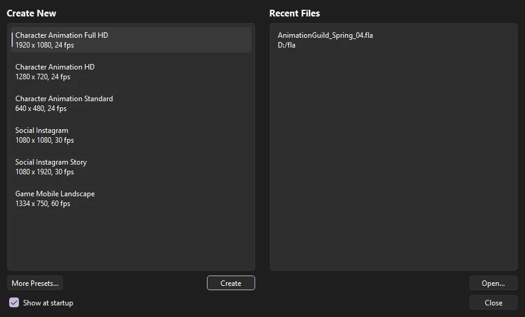
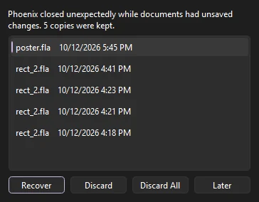

Get started
Install and update
Phoenix comes as one download per platform, with everything it needs inside, and keeps itself up to date.
System requirements
| Platform | Supported | Download |
|---|---|---|
| Windows 10 and 11 (64-bit) | Yes | Phoenix-win-x64-Setup.exe, or Phoenix-win-x64-Portable.zip |
| macOS on Apple silicon | Yes | Phoenix-osx-arm64-Setup.pkg, or Phoenix-osx-arm64-Portable.zip |
| macOS on Intel | Planned | — |
| Linux | Planned | — |
The links above always download the latest version. Earlier versions, pre-releases and the release notes for each version are on the releases page on GitHub.
Nothing else needs installing. Phoenix ships with its own copy of ffmpeg, which it uses to export MP4 and ProRes video and to import video, so those work straight away.
A graphics tablet is optional. When one is connected, the brushes respond to pen pressure and tilt, and turning the pen over to its eraser end switches to the Eraser.
Install on Windows
- Download
Phoenix-win-x64-Setup.exe, the installer from the latest release. - Run the installer. Phoenix installs into your user account, so it does not ask for administrator rights, and it starts when the installer finishes.
- Phoenix adds itself to the Start menu. It also registers the
.phxfile type and adds itself to the Open with list for.flafiles, without changing which app opens them by default.
The Windows installer is not code-signed yet, so SmartScreen may warn that the publisher is unknown. Choose More info, then Run anyway. Signing is Planned.
To use Phoenix without installing it, download Phoenix-win-x64-Portable.zip instead, unpack it anywhere, and run Phoenix.exe. Keep the unpacked files together: ffmpeg.exe next to Phoenix.exe is what exports video. A portable copy does not update itself.
Install on macOS
- Download
Phoenix-osx-arm64-Setup.pkg, the installer from the latest release. - Open the package and follow the installer. It puts Phoenix.app in your Applications folder. The package is signed and notarized by Apple, so Gatekeeper opens it without a warning.
- Start Phoenix from Launchpad or Applications. You can also drag a
.flaor.phxfile onto the Dock icon to open it.
Updates
An installed copy of Phoenix checks for a new version a few seconds after it starts. You can also check at any time with What changed in each version is in the changelog.
- When an update is found, Phoenix downloads it in the background and shows the progress in the status bar. Usually only the changed parts are downloaded, so updates are small.
- When the download finishes, Phoenix offers Restart Now or Later. If you choose Later, the update installs when you quit.
- Pre-release builds are not offered as updates. To try one, download it from the releases page.
Only copies installed by the installer can update themselves. A portable copy or a build from source tells you so when you choose Check for Updates.
The start screen
When you start Phoenix without a file, it opens the Welcome to Phoenix window. Pick a size under Create New to start a document, choose a file under Recent Files, or click Open... to browse. More Presets... opens the full New Document dialog.

It also comes back when you close your last document, unless Show at startup is off. You can bring it back at any time from
Open a file
Phoenix opens Phoenix documents (.phx), FLA files (.fla), uncompressed XFL folders, and older binary FLA files. You can open a file in several ways:
- (Ctrl+O), or .
- Drag the file onto the Phoenix window.
- Double-click a
.phxfile, or right-click a.flafile and choose Open with › Phoenix. - Name the file on the command line.
Each document you open gets a tab of its own above the stage; the tabs appear once more than one document is open. Click a tab to switch to it, drag tabs to reorder them, and click a tab's close button or press Ctrl+W () to close it. Ctrl+Tab moves to the next tab. Opening a file that is already open switches to its tab, and an untouched new document is simply replaced by the next one you open.
Recovering after a crash
Phoenix saves a recovery copy of your work every two minutes while it has unsaved changes. If Phoenix closes unexpectedly, the next time it starts it opens Recover Unsaved Work, which lists every copy it kept, newest first, with the document's name and when it was saved. Hover over one to see where the document came from.

- Recover
- Opens the selected copy, back at its original location and marked unsaved. Save it to keep it. Double-clicking a copy does the same.
- Discard
- Deletes the selected copies. Select several with Ctrl or Shift.
- Discard All
- Deletes every copy, after asking.
- Later
- Keeps the copies and offers them again the next time Phoenix starts.
Copies you do not recover are offered again next time. See Auto-save and recovery to change how often Phoenix saves them.